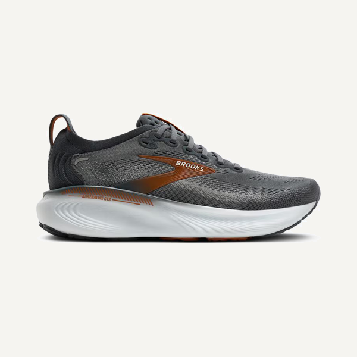

Answer a few quick questions and get matched to the shoe that actually fits how you move — built from years of real in-store fittings, not whatever a brand paid to push.



Quick questions about your feet, your runs, and what's felt off before. No jargon.
We point you to the shoes that fit how you actually move — with the why behind each pick.
Grab your match wherever you like. No pressure, no upsell, no inventory to clear.
Most "shoe finders" belong to a store and quietly show you what's in stock. This one isn't tied to anyone's inventory — the only goal is the right fit.
Every question and recommendation comes from years of fitting real people, watching them run, and seeing what actually worked — not a spec sheet.
No shoe is perfect for everyone. We tell you what a pick is great at and where it isn't, so you choose with your eyes open.
Wide feet, flat arches, cranky knees, first-ever race — the stuff a generic quiz ignores is exactly what we ask about.